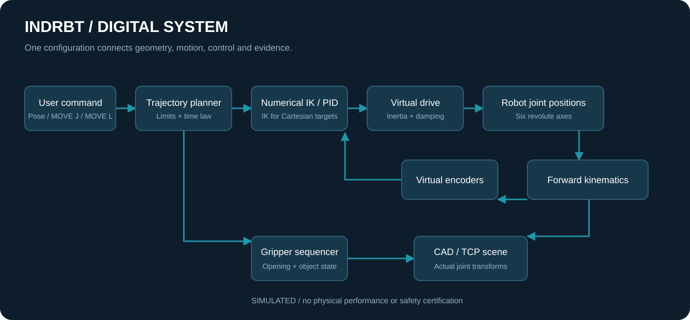

ASTER-6 / Reading room
System architecture
Adapted for browser reading from the project’s illustrated documentation. Numeric results and engineering scope are unchanged. Reproduction notes are optional; the robot and board viewers run from the navigation above.
On this page

The user chooses an FK pose, joint MOVE J, Cartesian MOVE L or pick-and-place program. The planner provides a time law and motion constraints. Cartesian waypoints use bounded numerical IK with verified pose residuals and continuation seeds. Joint-space planning already knows its joint targets and therefore bypasses IK.
The virtual joint controller applies PID, torque saturation and anti-windup to independent assumed inertia/damping plants. FK converts joint positions into TCP pose. Virtual encoder readings return joint position; pose error remains a software calculation. Gripper opening is sequenced with object attachment/release in the visualization. The grasp is an ideal kinematic constraint, not simulated friction/contact dynamics.
CAD meshes are attached to the same joint transforms as the mathematical model. This establishes a geometric digital twin. It is not a high-fidelity dynamic twin: gearbox compliance, contact, friction, thermal effects and flexible bodies are omitted.
The conceptual electronics interface is kept separate from the simulation. A hypothetical implementation would require real-time firmware, calibrated sensors, drive commissioning and independently engineered safety hardware.